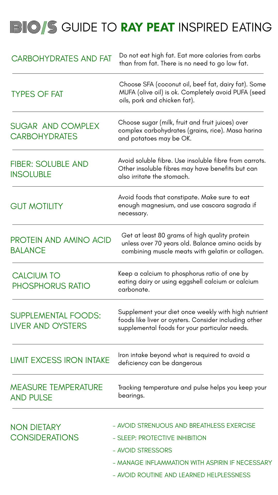

Guide to Ray Peat Inspired Eating
INTRODUCTION
If you want to get started following some of Ray’s ideas, the amount of information can seem overwhelming. Even his articles can be difficult to understand because of the detail and depth of his writing. It is important to note that there is no Ray Peat diet. There are a series of principles, and generalisations that Ray made from decades of an exhaustive study of physiology, as well as his personal experiences and of those that came to him for help. These principles can be found in his newsletters, but they have never been structured explicitly by Ray like I’m doing here, so remember that at some point you will have to progress to reading his articles. This is just a “gentle introduction”, and will necessarily have simplifications and omissions.
The following principles can be applied in many different ways, and the result will be different depending on your particular circumstances. If you are just starting, you don’t need to follow every single one, or even the majority of them. Just applying some of them will provide noticeable increases in health and well-being. Once you see results, you can continue implementing the rest. If you have a serious illness you may have to apply most or even all of them and be rigorous about them. As said before, it depends on your situation.
Ray was a thinker who always stressed context and did not like protocols and pre-made instructions. This means that you may have to work more up-front to get the most out of a Peat-inspired diet and lifestyle, but the rewards will be well worth it.
CARBOHYDRATES AND FAT
While both are sources of energy, the complete oxidation (burning for energy) of carbohydrates will produce one-third more CO2. CO2 is a central molecule in Ray’s thinking because it helps to keep the cell in a high-energy state. It relaxes cells, acts as a vasodilator, eliminates intracellular calcium, and has many other critical physiological roles. Put plainly, life cannot exist without CO2. I will explore the science of why CO2 is so important in another article. Just know that it is incredibly important to how Ray views life and biological energy.
Fat oxidation also tends to shift the cell to a more reduced state, while Ray sees its opposite - a more oxidized state - as necessary for good health.
IN SUMMARY: Do not eat high fat. Eat more calories from carbs than from fat. There is no need to go low-fat
TYPES OF FAT
Because polyunsaturated fatty acids (PUFAs) have a very high tendency to peroxidize and cause oxidative damage to the cell, they should be avoided as much as possible. There is no advantage to be gained from consuming PUFAs. Omega-6 PUFAs are converted to inflammatory mediators that keep the organism in a low-energy state, and Omega-3 PUFAs are so unstable that they spontaneously break down, creating extremely toxic substances like acreolin.
Monounsaturated fatty acids (MUFA) do not peroxidize at nearly the rate of PUFAs, but they don’t share the protective effect of saturated fatty acids (SFA). SFAs increase metabolism, and thyroid hormone output and protect against stored PUFA, amongst many benefits. They should be the main fat in the diet.
IN SUMMARY: Choose SFA (coconut oil, beef fat, dairy fat). Some MUFA (olive oil) is ok. Completely avoid PUFA (seed oils, pork, and chicken fat).
SUGAR AND COMPLEX CARBOHYDRATES
According to Ray, sugar (that is, sucrose) is the preferred carbohydrate source, and in and of itself has therapeutic benefits. Maintaining steady blood sugar is important, and sugar does this better than complex carbs that spike it only to lower it once they are cleared from the bloodstream but insulin remains.
The fructose part of sugar is shunted to the liver where it is in part converted to glucose. Fructose increases liver energy and glycogen, which is necessary for an efficient conversion of T4 to T3, the active thyroid hormone. An energized and glycogen-rich liver is also very important for estrogen elimination.
Besides its tendency to spike and crash blood sugar, uncooked starch granules can be absorbed and block small capillary networks. Starch can also be fermented by gut bacteria. Ray does not hold the mainstream view that a plentiful microbiome is desirable. Bacteria produce harmful substances like endotoxin, and the more bacteria present, the more is produced. Because sugar cannot be fermented, preferring sugar over complex carbohydrates will reduce the amount of intestinal bacteria and their associated toxins.
IN SUMMARY: Choose sugar (milk, fruit, and fruit juices) over complex carbohydrates (grains, rice). Masa harina and potatoes may be OK.
FIBER: SOLUBLE AND INSOLUBLE
Fibre can be classified as soluble or insoluble, Soluble fibre can be fermented by intestinal bacteria, so it should be avoided. Insoluble fiber cannot be metabolized by bacteria. It has the potential to bring toxins and excreted hormones like estrogen. The safest form of fiber is that of a carrot. It can be combined with coconut oil to make Ray’s famous carrot salad. He also spoke favorably of bamboo shoot fiber. Other types of insoluble fiber, despite not being fermentable can irritate the intestine and slow gut motility. Experimentation and context will determine which types of fiber can be used.
IN SUMMARY: Avoid soluble fiber. Use insoluble fiber from carrots. Other insoluble fibers may have benefits but can also irritate the stomach.
GUT MOTILITY
It is very important to avoid foods that have a constipating effect. Increased intestinal transit time means that more bacterial toxins are absorbed. Because calcium can have a constipating effect, it is important to balance it with adequate magnesium. If constipating food avoidance is not enough, consider using a laxative like cascara sagrada until gut motility is increased. A pro-metabolic way of eating will generally speed up transit time.
IN SUMMARY: Avoid foods that constipate, make sure to eat enough magnesium, and use cascara sagrada if necessary.
PROTEIN AND AMINO ACID BALANCE
An adequate amount of protein is necessary for the liver to detoxify estrogen and convert T4 to T3. Protein is also crucial to maintaining muscle mass, which helps keep the metabolic rate up and mainly burns fatty acids at rest. Ray usually advocated for at least 80 grams of protein for women, and perhaps around 90 or 100 for men. In his last years, he started experimenting with lower protein amounts, in the realm of 50 grams to reduce mTOR activation. However, I think this advice is more relevant for aged people, and for those who are younger than 70, his previous recommendations are more relevant.
Protein is made from amino acids, each of which has distinct physiological effects. Tryptophan can be converted to serotonin, a stress hormone. Methionine and cysteine are thyroid suppressive. Tryptophan, methionine, and cysteine are commonly found in muscle meats, so it is important to combine these protein sources with others that are deficient in them like gelatin or collagen. Tryptophan is balanced by the branched-chain amino acids, and cysteine and methionine by glycine and proline (both of which are found in high amounts in gelatin).
Active people like weightlifters have a higher protein requirement to compensate for muscle breakdown and repair. It is just in these cases where protein intake is higher that amino acid and protein source balancing is critical. Eating just muscle meats means an excess of Tryptophan, Methionine, and Cysteine. Ray also spoke negatively of whey protein because of its amino acid profile.
IN SUMMARY: Get at least 80 grams of high-quality protein unless over 70 years old. Balance amino acids by combining muscle meats with gelatin or collagen.
CALCIUM TO PHOSPHORUS RATIO
It is important to keep a calcium-to-phosphorus ratio of at least one. Milk has a balanced ratio, but meat has an excess of phosphorus. Grains and legumes also have more phosphorus than calcium. When this ratio is less than one, PTH, a very inflammatory and anti-metabolic hormone increases. To balance this ratio, take calcium either from dairy sources, eggshell calcium, or calcium carbonate.
IN SUMMARY: Keep a calcium-to-phosphorus ratio of one by eating dairy or using eggshell calcium or calcium carbonate.
MEASURE TEMPERATURE AND PULSE
As your health improves, or you try different approaches to your health, it is important to know whether you are going in the right direction. A cheap and easy way to do this is by measuring morning temperature and pulse. After breakfast, your temperature should rise, and the pulse should be about 80 bpm. If your temperature drops after breakfast your adrenaline is elevated. Pro-metabolic interventions will increase body temperature towards 98.6F. A low morning temperature may indicate hypothyroidism.
IN SUMMARY: Tracking temperature and pulse helps you keep your bearings.
SUPPLEMENTAL FOODS: LIVER AND OYSTERS
Some foods are especially high in particular nutrients and serve as filler and contaminant-free “supplements” for your diet. They only need to be included once or twice per week, but they provide a large amount of these nutrients. Some examples are liver for Vitamin A and copper, or oysters for Zinc. As you figure out what your particular nutritional needs are, you may have to include other high-nutrient foods that agree with other peat-inspired principles.
IN SUMMARY: Supplement your diet once weekly with high-nutrient foods like liver or oysters. consider including other supplemental foods for your particular needs.
LIMIT EXCESS IRON INTAKE
Iron is a heavy metal, but it is also essential for the heme pigment inside red blood cells that enables them to carry oxygen to the tissues. Excess iron catalyzes very destructive free radical chain reactions. If there is stored PUFA in the tissues their combined effects will be more than additive. Iron is also very immunosuppressive and correlated with various cancers. Vitamin C increases iron absorption, so it is very important not to take it with iron-containing foods like meats. Caffeine can reduce iron absorption. The ages of lowest mortality roughly coincide with the ages at which tissue iron saturation is lowest.
IN SUMMARY: Iron intake beyond what is required to avoid a deficiency can be dangerous.
NON DIETARY CONSIDERATIONS
- AVOID STRENUOUS AND BREATHLESS EXERCISE
Aerobic exercise increases lactic acid and cortisol while decreasing T3. Concentric weightlifting helps maintain and increase muscle mass. More important than prescribed or regimented activities like running are things that emerge spontaneously.
- SLEEP: PROTECTIVE INHIBITION
All cells require a balance of stimulation and inhibition. Sleep is the stage at which the inhibitory processes are at their highest intensity. Without the protective effect of inhibition, cells become fatigued and over-excited at the same time, like a cramped muscle. A snack before bed, like some ice cream or orange juice can help sleepiness set in. For hypothyroid people, T3 at night allows for more restful sleep.
- AVOID STRESSORS
Anything that activates the stress response will increase free fatty acids (FFA) in the blood. If the tissues have stored PUFA they will be released as FFA that increases oxidative stress and damages mitochondria. To the extent that stress is unavoidable, sugar and Vitamin B3 (Niacinamide) help lower FFA.
- MANAGE INFLAMMATION WITH ASPIRIN IF NECESSARY
All chronic disease has some aspect of chronic inflammation. If dietary interventions are insufficient to control symptoms and increase health, Aspirin can be a great aid that lowers inflammation, prostaglandins, FFA, fatty acid oxidation, and increases glucose oxidation. Aspirin also increases the metabolic rate and is thyromimetic.
- AVOID ROUTINE AND LEARNED HELPLESSNESS.
A mindless routine and the feeling that there is no possible hope for the future both increase serotonin. This hormone not only decreases the metabolic rate but also activates inflammatory processes and estrogen synthesis. Novelty and a feeling of positive future outcomes decrease serotonin and increase dopamine.